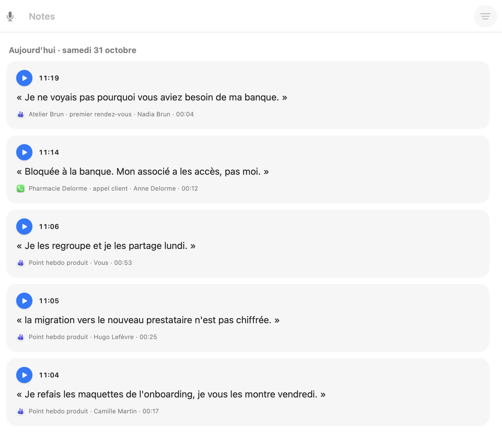
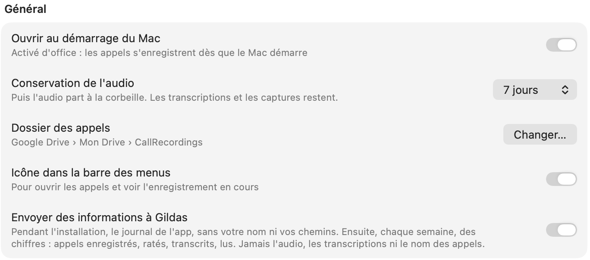

Guides
Chaque geste de CallRecorder, pas à pas.
Démarrer
Donner à Claude l'accès à vos appels
- Si Claude était installé quand vous avez installé CallRecorder, c'est déjà fait. Sinon, dans les Réglages, ouvrez Outils et intégrations › Claude et activez Accès de Claude à vos appels : Claude Code, Claude Desktop et Codex (en bêta) sont reliés à vos appels.
- Quittez et relancez Claude.
- Demandez-lui par exemple : « Qu'est-ce que j'ai promis à Paul jeudi ? »

Relier vos appels à un autre assistant
Codex est relié comme Claude, sans rien faire ; c'est encore une bêta. Cursor, VS Code, Gemini CLI, LM Studio et les autres assistants compatibles MCP peuvent lire vos appels de la même façon. CallRecorder est un serveur MCP local : rien ne passe par Internet tant que l'assistant ne lit pas une transcription.
- Dans les Réglages de CallRecorder, ouvrez Outils et intégrations › Claude : la partie Autre assistant, en bas, donne la consigne et la configuration.
- Si l'assistant sait modifier sa configuration lui-même (Cursor en mode agent, par exemple), cliquez sur Copier la consigne et collez-la-lui dans une conversation.
- Sinon, cliquez sur Copier la configuration MCP et collez-la dans le fichier de l'assistant, par exemple
~/.cursor/mcp.jsonou~/.gemini/settings.json. - Redémarrez l'assistant et demandez-lui : « Liste mes derniers appels ».
La configuration tient en trois lignes : un serveur nommé calls, la commande /Applications/CallRecorder.app/Contents/MacOS/CallRecorder et l'argument mcp.
Revoir les autorisations et les réglages
S'il manque le micro ou le son des apps, une carte en tête de la liste des appels le dit, avec Ouvrir les Réglages : l'appel de test y est, en haut. En bas à gauche de la fenêtre Appels, cliquez sur Réglages (ou ⌘,) : ils prennent la place des appels. En haut, une ligne dit si vos appels sont bien enregistrés, et sinon ce qui manque. Chaque autorisation s'y donne d'un clic ; on y règle aussi Claude, la durée de conservation de l'audio, le dossier des appels et l'icône de la barre des menus. Quand Réglages Système s'ouvre, un petit panneau s'y colle pour indiquer quoi faire.

Choisir les apps et les sites enregistrés
Dans les Réglages, en bas à gauche de la fenêtre Appels, ouvrez Apps et sites, sous Appels enregistrés : chaque app a son interrupteur. Dans un navigateur, chaque site se coupe à part : Google Meet, Zoom, Teams, WhatsApp Web, Slack… Il est reconnu au titre de la fenêtre ; Autres sites couvre les appels qu'on ne reconnaît pas.
Enregistrer
Prendre une note vocale
- Dans les Réglages, sous Général, activez Prise de note rapide.
- Autorisez CallRecorder dans Réglages Système › Confidentialité et sécurité › Accessibilité, pour qu'il entende fn + D : le bouton Ouvrir Réglages Système y mène.
- Dans n'importe quelle app, appuyez sur fn + D : CallRecorder ouvre vos notes et enregistre. Parlez, puis Entrée.
La note est transcrite aussitôt et rangée dans Notes, en tête de la liste des appels, avec son heure. Claude et les autres assistants la lisent comme un appel.
Enregistrer une réunion en face à face
Posez le Mac sur la table, entre vous. Cliquez sur l'icône de CallRecorder dans la barre des menus, puis sur Enregistrer une réunion (le même bouton est en bas à gauche de la fenêtre Appels). Pour finir, Arrêter l'enregistrement, au même endroit : la transcription suit.
Chaque voix reçoit un numéro et une couleur, « Voix 1 », « Voix 2 »…, selon l'endroit d'où vient le son. Pour lui donner son vrai nom, surlignez une de ses répliques, puis le chevron de Modifier.
Enregistrer les appels de votre iPhone
Grâce à Continuité, le Mac sert de combiné à votre iPhone : la voix passe par son micro et ses haut-parleurs, et CallRecorder l'enregistre.
- Sur l'iPhone : Réglages > Téléphone > Appels sur d'autres appareils, cochez votre Mac.
- Vérifiez que l'iPhone et le Mac utilisent le même compte Apple et sont sur le même Wi-Fi.
- Prenez ou passez vos appels sur le Mac, dans l'app Téléphone, ou décrochez l'appel qui s'y affiche.
Un appel décroché sur l'iPhone lui-même ne passe pas par le Mac : il n'est pas enregistré.
Enregistrer les appels d'un Android
L'appel reste sur le téléphone. Branché au Mac en USB, il lui transmet la voix des deux côtés : rien à installer sur le Mac.
- Sur le téléphone : Paramètres > À propos du téléphone, touchez sept fois Numéro de build.
- Dans Paramètres > Système > Options pour les développeurs, activez le Débogage USB.
- Branchez-le au Mac et acceptez « Autoriser le débogage USB ».
Pixel 4a à 10, Galaxy à l'essai. Appels du réseau mobile seulement, pas WhatsApp ni Signal. Le numéro et le nom de l'interlocuteur sont repris du journal d'appels.
Arrêter ou supprimer un enregistrement
Pendant l'appel, cliquez sur l'icône de CallRecorder dans la barre des menus : Arrêter l'enregistrement, en bas, le termine. Pour l'effacer, faites un clic droit sur l'icône > Supprimer cet appel. Après l'appel, choisissez-le dans la fenêtre Appels et appuyez sur ⌘⌫, ou faites un clic droit > Supprimer l'appel : il part à la corbeille du Mac. Édition > Annuler (⌘Z) le remet.
Au quotidien
Retrouver et réécouter un appel
Cliquez sur l'icône de CallRecorder dans la barre des menus : vos appels s'affichent, et un clic sur l'un d'eux ouvre la fenêtre Appels. À gauche, la liste des appels ; l'icône du calendrier, en haut, mène à un jour. Cliquez sur un appel : il s'affiche à droite, avec la lecture en haut. Espace lit ou met en pause, et un clic sur la forme d'onde ou sur une réplique va au bon moment. Un double-clic ouvre l'appel dans sa propre fenêtre.

Faire une note d'un passage, l'envoyer à Claude ou le corriger
Dans la transcription d'un appel, surlignez quelques mots : trois boutons apparaissent en bas à gauche, et la lecture ne joue plus que ce passage.
- Créer une note le range dans vos notes, avec l'appel d'où il vient, qui parle et à quel moment. Un clic sur ce sous-titre ramène à la réplique. En haut à droite de l'appel, la pile de ses notes mène aux notes tirées de cet appel ; dans Notes, le bouton de filtre liste les appels annotés.
- Envoyer à Claude ouvre une conversation avec le passage et ce qui l'entoure : les répliques d'avant et d'après, ce qui était à l'écran. Le chevron propose Cowork, ChatGPT ou de copier le tout.
- Modifier corrige la réplique sur place (Entrée pour garder, Échap pour annuler) : c'est une nouvelle transcription, la précédente reste dans le menu des transcriptions. Le chevron l'attribue à une autre personne, ou montre ce que chaque transcription avait entendu.

Pour écouter une seule voix, ouvrez le chevron au bout du lecteur et choisissez Séparer les pistes : une rangée par voix, et le haut-parleur de chacune la coupe à l'écoute.

Retranscrire, ou améliorer avec Claude
Ouvrez le menu des transcriptions de l'appel, en haut à droite (v1 · Transcription). Nouvelle transcription fait réécouter l'appel. Améliorer avec Claude fait relire la dernière transcription par Claude, avec l'écran de l'appel, votre agenda et vos e-mails. Chaque passage est une nouvelle version, et les précédentes restent dans ce menu.

Copier ou exporter une transcription
Dans la fenêtre de l'appel, Copier (⇧⌘C) met toute la transcription dans le presse-papiers. Exporter l'enregistre en texte, Word, Markdown ou sous-titres (aussi dans Fichier › Exporter la transcription). Les transcriptions sont aussi dans le dossier CallRecordings de votre dossier personnel, en Markdown.
Ranger et garder
Ranger vos appels en groupes
Dans les Réglages, ouvrez Groupes, sous Appels enregistrés. Un groupe réunit des appels qui vont ensemble : un client, un recrutement, le perso. Glissez-y des appels depuis la liste. Chaque groupe montre ses 5 derniers appels ; les plus anciens s'empilent par mois, et un clic sur une pile la déplie. Le chevron au bout du titre replie tout le groupe.
Donnez un sous-titre à un groupe (menu ⋯ › Ajouter un sous-titre) pour dire ce qu'il rassemble, par exemple « Refonte de la boutique en ligne, du devis à la mise en ligne ». Après chaque appel, Claude s'en sert comme consigne : quand il est sûr, il range l'appel dans le groupe qui lui correspond, et une petite icône Claude le signale, avec sa raison au survol. Il ne touche jamais à un appel que vous avez déjà rangé, et ne voit pas les groupes gardés hors des IA.
Héberger vos appels en ligne (Google Drive, iCloud, Dropbox)
Par défaut, vos appels sont rangés dans le dossier CallRecordings de votre Mac. Placez ce dossier dans Google Drive, iCloud Drive ou Dropbox : il est alors hébergé en ligne, sauvegardé si votre Mac se perd, et vous retrouvez vos transcriptions sur votre téléphone et vos autres ordinateurs. Pas de compte CallRecorder : c'est votre propre espace en ligne.
- Installez l'app du service sur votre Mac, par exemple Google Drive pour ordinateur, et connectez-vous. iCloud Drive est déjà là si vous l'avez activé dans Réglages Système.
- Dans les Réglages de CallRecorder, sous Général, à la ligne Dossier des appels, cliquez sur Changer…
- Dans la barre latérale de la fenêtre qui s'ouvre, cliquez sur Google Drive (ou iCloud Drive, Dropbox), ouvrez Mon Drive ou un dossier à l'intérieur, puis cliquez sur Déplacer ici.
CallRecorder y déplace le dossier CallRecordings avec tous vos appels, puis redémarre. La ligne indique alors où ils sont, par exemple Google Drive › Mon Drive › CallRecordings.

Les nouveaux appels sont envoyés en ligne à mesure qu'ils s'enregistrent. Quand l'audio d'un appel arrive à expiration, il part dans la corbeille du service. Le changement de dossier attend la fin de l'appel ou de la transcription en cours. Pour revenir en arrière, choisissez à nouveau votre dossier personnel.
Vos appels sont alors stockés chez Google, Apple ou Dropbox, et plus seulement sur votre Mac. Tous y partent, y compris ceux des groupes gardés hors des IA : pour n'envoyer que certains groupes, faites plutôt une copie (Réglages › Outils et intégrations › Autres outils).
Garder l'enregistrement audio d'un appel
L'audio part à la corbeille au bout de 7 jours, une durée que vous pouvez changer dans les Réglages ; la transcription et les captures restent. Le chevron au bout du lecteur de l'appel indique la date. Pour garder l'audio, choisissez Garder l'enregistrement dans ce chevron, au clic droit de l'appel dans la liste, ou dans le menu Appel. Claude peut aussi le faire (« Garde l'enregistrement de cet appel »).
Si ça coince
Claude ne voit pas vos appels
Quittez Claude complètement (⌘Q) et relancez-le : il ne découvre l'accès à vos appels qu'au démarrage. Si rien ne change, vérifiez dans les Réglages de CallRecorder, Outils et intégrations › Claude, que Accès de Claude à vos appels est activé.
Une erreur pendant l'installation
Copiez tout le texte du Terminal et collez-le dans Claude ou un autre assistant : l'installation explique chaque échec en français, l'assistant vous dira quoi faire. Vous pouvez ensuite relancer la même ligne.
Mettre CallRecorder à jour
CallRecorder vous propose chaque nouvelle version. Pour vérifier vous-même : Réglages › Général › Rechercher une mise à jour. Quand une version attend, une étiquette « Mise à jour » apparaît au bout du bouton Réglages. Ce qui change à chaque version est dans le journal des versions.